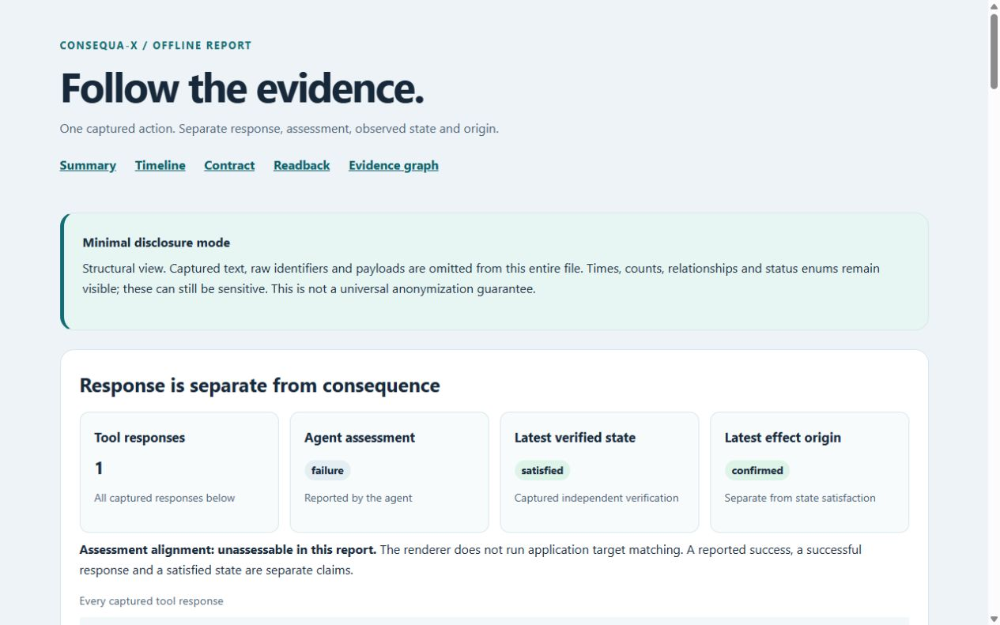

01 / CAPTURE
Keep the whole history.
Declare the intended outcome. Retain dispatches, responses, and what the agent reported in a portable typed trace.
A tool response is only part of the story.
Trace the action. Read back the outcome. See what holds up.
Python 3.11+MIT licensedNo required runtime dependencies
One refund before 50 ms
Agent requests the refund
Agent reports failure
Matching effect; qualified agent provenance
Independent readback establishes the refund. Qualified provenance links the effect to this agent.
Illustration uses an explicit action-linked target matcher. Package reports leave alignment unassessable. Understand the boundary
Refunds. Deliveries. Database writes.
When agents change something, keep the intention, the history, and the readback together.
Declare the intended outcome. Retain dispatches, responses, and what the agent reported in a portable typed trace.
Your application supplies a verifier and a trusted read-only source. Keep state, timing, persistence, and effect origin explicit.
Follow the timeline and evidence graph. Distinguish a verified state from who produced it, and leave missing evidence as unknown.
You define success and establish source trust. Consequa-X preserves and explains the evidence you supply; a graph edge does not establish causal necessity.
A later observation shouldn’t rewrite the earlier record. Successive readbacks retain separate witnesses, even when they refer to the same effect.
Default reports omit captured payloads and raw identifiers. Local display aliases keep the structure readable. Reveal captured fields only when you choose.
See what stays visibleExport a self-contained HTML report. Open it without a model, API key, hosted account, or web server.
Make your first reportField omission reduces disclosure; it is not universal PII detection. Keep the original trace and source evidence as the record.
A walkthrough of the HTML report generated by Consequa-X 1.1.0. These are actual package screenshots, using synthetic example data.

Actual package output · synthetic example dataA short walkthrough captured from a generated report: summary, timeline, readback, and evidence graph. It performs no live action, model call, or replay. Play it when you choose; pause returns to the still image.
ZIP contains the original self-contained HTML.
Install the package, generate synthetic examples, and open an offline report. Then connect your application’s independent readback.
Follow the quickstartVersion 1.1.0 is available on PyPI.
This quickstart performs no real refund or delivery.
$ python -m pip install consequa-x==1.1.0$ consequa-x demo --output my-demo# 03 — Make an offline report$ consequa-x report \
my-demo/traces/episode_01.json \
--output my-report.html